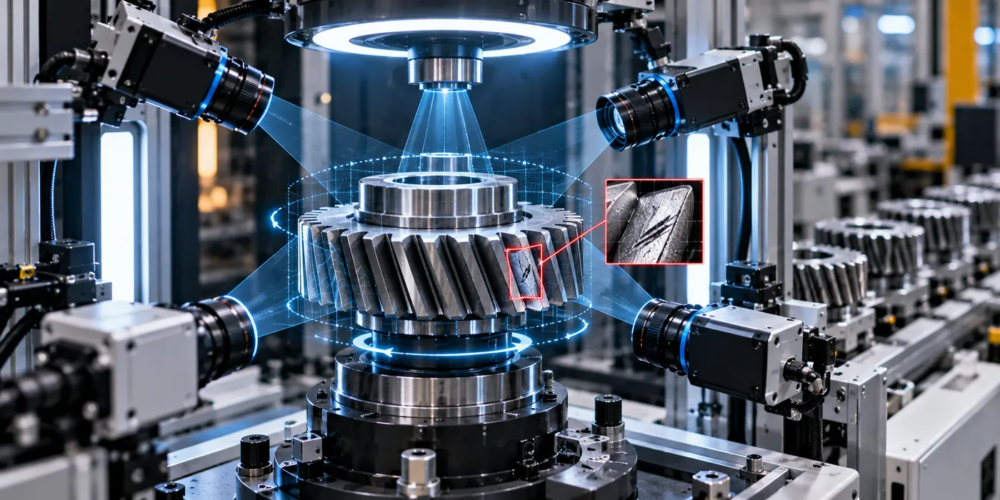

The Assignment
Automotive gear manufacturing requires consistent inspection of component surfaces while maintaining the cycle times demanded by high-speed production environments.
The requirement was to develop an automated inspection solution capable of examining the complete surface of automotive gears, identifying defects reliably and integrating quality inspection into the production workflow without creating a manufacturing bottleneck.
Our Approach
CS TECH Ai developed an AI-based machine vision solution for automated 360° inspection of automotive gears.
The engagement included:
- Development of an automated vision-based gear inspection system
- 360° inspection of the component surface
- Image-based detection and classification of surface defects
- Detection of scratches, dents, pits and marks
- Development of machine learning models for defect identification
- Training of machine learning models using reference image datasets
- Automated analysis of captured component images
- Integration of real-time quality inspection into the production workflow
- Engineering of the inspection process for high-speed manufacturing requirements
The solution combined machine vision with machine learning to inspect the component from all sides and automatically identify surface-quality issues during the manufacturing process.
Defects Identified
The inspection system was designed to detect surface defects including:
- Scratches
- Dents
- Pits
- Marks
Key Performance
- 360° automated gear inspection
- 8-second inspection cycle per component